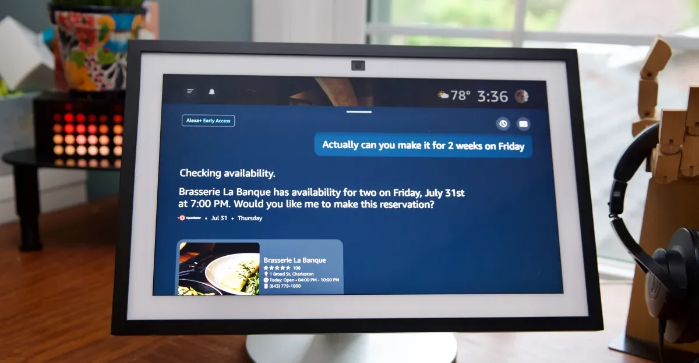
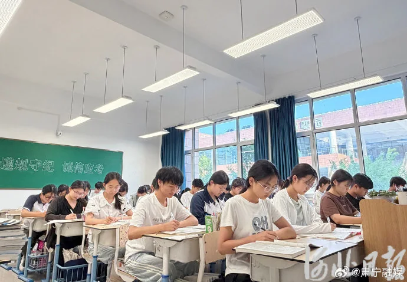

AI语音混战、医疗承诺与监管急刹车：科技圈的七月风暴
Alexa Plus迎来AI升级、Claude语音模式开放、ChatGPT Health全面上线、Patreon裁员20%、美国议员拟推AI“kill switch”法案。五件事串联AI应用落地、商业阵痛与监管加速。
把每天真正值得理解的事情，写成可以慢慢读的文章，也做成可以随时听的播客。

Alexa Plus迎来AI升级、Claude语音模式开放、ChatGPT Health全面上线、Patreon裁员20%、美国议员拟推AI“kill switch”法案。五件事串联AI应用落地、商业阵痛与监管加速。

本期伊恩每日聚焦教育公平，从城乡资源差距、加州阅读投资成效、北卡农村托育支持到高校暑期学校，拆解政策背后的真实影响，为家长、学生和职场人提供可操作的行动建议。
今天聊CBA两位功勋的不同命运、曼联转会新动向，以及板球百球赛的疯狂一夜。